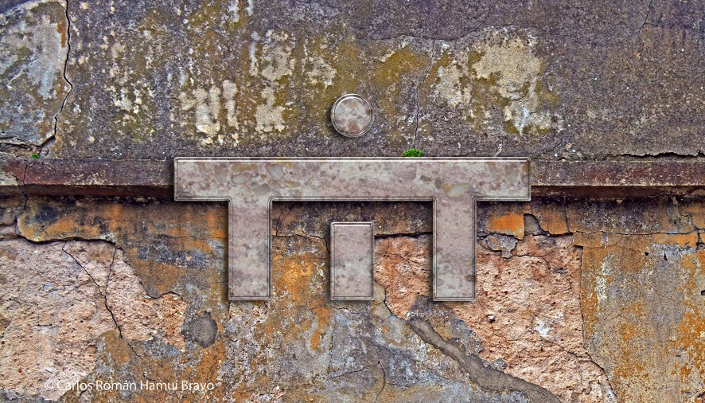

Buenos Aires, 1977. Una ciudad militarizada, un país sojuzgado. En el aire sonaba el silencio de gritos ahogados, de quejidos, de susurros. Uniformes color oliva deambulaban armados esperando una señal. Hombres de traje con anteojos oscuros paseaban por las calles sus Ford Falcon, de moda en esos años. No podías percatarte de si te estaban mirando. El sol no podía atravesar el gris de la resignación, el sometimiento, la chatura, el dolor. De pronto entre las sombras se veían movimientos extraños de pequeños seres que salían de los rincones y desaparecían en huecos de las paredes. Mientras corrían de aquí para allá gritaban frases que no llegaban a escucharse o entenderse bien. Quedaban ecos. Cada tanto liberaban un color, que se mezclaba con otros que flotaban en la atmósfera, emanados desde otras profundidades. Era el TiT, que había sido parido.
El TiT creció, se multiplicó, y en pocos años fue mucho lo que se debatió, se produjo, se escribió, se imaginó, se plasmó. Cuando la dictadura militar se derrumbó, el TiT ya no estaba.
Casi 30 años después de haber dejado de existir los talleres masivos multidiscipliarios del TiT, algunos miembros se fueron reencontrando. Primero convocados para un documental, luego por una muestra sobre expresiones artísticas latinoamericanas de los años '80, más tarde por un reconocimiento de parte del sindicato argentino de actores. Mientras, los antiguos titeanos se iban reconociendo, y fueron recordando que habían existido.
Este sitio se realizó principalmente para hurgar y mostrar esa casi efímera pero vehemente existencia. Y... Quién sabe...

contacto: titzangandongo@yahoo.com

En la siguiente tabla se muestran atajos a todas las p√°ginas secundarias de este sitio.
|
Historia
del TiT |
|
|
Juan
Uviedo |
|
|
Montajes y hechos teatrales del TiT |
|
|
Zangandongo |
Sitio creado, escrito y administrado por Batata, con el aporte y la memoria de otros titeanos: Espejo, Chiari, Brand, El Mauri, Cthulhu, Zolezzi; y de Picun (TiC).